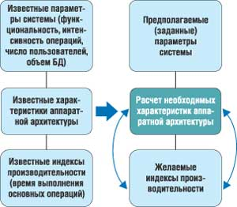
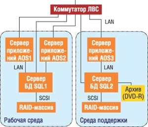
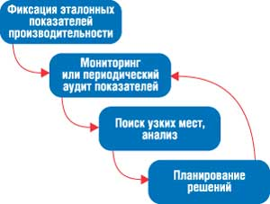
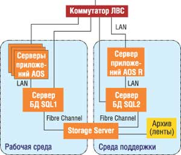

Сергей Котов,
руководитель отдела ИТ ЗАО "АСБ-Рейтинг-Центр"
kotov@hoztorg.ru
В этой статье мы будем рассматривать вопросы производительности по отношению к Microsoft Business Solutions-Axapta как к комплексной системе, состоящей из многих взаимозависимых компонентов: серверов баз данных (БД) и приложений, архитектуры соединений и ЛВС, операционной системы, клиентов - рабочих мест пользователей. Поэтому под термином "система Microsoft Axapta" надо понимать весь комплекс технической инфраструктуры для Microsoft Axapta - решения класса ERP, обеспечивающего сопровождение бизнес-функций предприятия.
Еще до момента проектирования высокопроизводительной системы необходимо определиться с тем, какую, собственно, систему можно считать высокопроизводительной? К каким показателям следует стремиться? Возможно, лучший ответ тут могут дать пользователи системы, и он будет звучать примерно так: "Пользователи бизнес-системы должны ориентироваться на решение бизнес-задач, а не проблем, связанных с процессом работы". Следуя этому определению, необходимо стремиться управлять именно ожиданиями пользователей от своей системы. Для этого следует разделить все операции в системе на несколько категорий, с разными требованиями к производительности. По типу операций можно выделить следующие категории:
- навигация по визуальному интерфейсу (открытие форм, выбор пунктов меню и функций);
- операции оперативной обработки данных (закупки, заказы, бухгалтерские проводки);
- отчеты (возможно деление на оперативные и статистические отчеты);
- служебные операции (переиндексация, синхронизация БД, архивное копирование; сюда же можно отнести и закрытие склада).
Наиболее критична для всех пользователей производительность при навигации по визуальному интерфейсу. Здесь обычно допустимы задержки менее секунды. С другой стороны, время подготовки крупных статистических отчетов может составлять несколько минут, и это будет восприниматься совершенно нормально. Ниже мы обсудим этот и многие другие вопросы обеспечения производительности более подробно, а первое, о чем мы поговорим, - это о том, как определить стратегию повышения производительности бизнес-систем Microsoft Axapta с учетом перспектив развития.
Стратегия построения высокопроизводительной системы
Очень часто на практике о производительности системы вспоминают лишь тогда, когда начинаются проблемы на этапе ее полномасштабной промышленной эксплуатации, т. е. уже после "успешного окончания проекта внедрения". В итоге под прессом недовольства пользователей приходится в спешке искать быстрые корректирующие решения. Подобной ситуации лучше не допускать и планировать свои решения и действия заранее.
По методологии MBS типичный цикл внедрения состоит из последовательных стадий: Диагностика - Анализ - Дизайн - Разработка и тестирование - Развертывание - Начальное сопровождение (более подробное описание этих стадий можно найти на сайте http://www.navision.ru). По мнению автора, вопросами производительности будущей системы Microsoft Axapta необходимо задаться уже на стадии дизайна. На этой стадии определяются подробные функциональные характеристики решения, появляются необходимые исходные данные для выбора подходящей аппаратной архитектуры. При этом остается достаточный запас времени на приобретение и настройку серверов баз данных и приложений, на которых в дальнейшем основывается разработка и тестирование программных решений.
В проектировании производительной системы Microsoft Axapta выделяется два направления: проектирование аппаратной архитектуры и обеспечение качества программных разработок. Необходимо понимать принципиальное различие между этими двумя направлениями. Обеспечение качества программных разработок (в данном случае по отношению к производительности) - это непрерывный процесс, критичный не только на этапе внедрения, но и на этапе сопровождения. Согласно принципам TQM (Total Quality Management), процесс обеспечения качества программных решений по отношению к производительности должен входить в общую непрерывную политику обеспечения качества работ в компании.
Проектирование аппаратной архитектуры - это скорее проект, направленный на получение конкретного продукта: технической схемы организации всей системы Microsoft Axapta и необходимых характеристик оборудования. При проектировании технической инфраструктуры необходимо учитывать не только эффективность функционирования рабочей БД, но и задачи сопровождения, например, дополнительные разработки в ходе эксплуатации системы, тестирование, обучение, архивное копирование. В случае высоких требований к надежности работы бизнес-системы необходимо отдельно разработать схему резервирования ее критичных узлов.
В данном случае лучшим методом проектирования аппаратной архитектуры, возможно, станет моделирование на основе предыдущего опыта (рис. 1). Метод подходит как для первоначального внедрения, так и для крупного обновления аппаратных ресурсов, например, при замене сервера баз данных.
|  | Рис. 1. Метод моделирования на основе предыдущего опыта.
|
Для эффективного использования этого метода необходим опыт предыдущих успешных проектов внедрения Microsoft Axapta с известными измеряемыми параметрами в трех областях: основные параметры системы, технические характеристики аппаратной архитектуры, индексы производительности.
В число основных параметров системы входят:
- работающая функциональность (модули);
- интенсивность различных операций (например, количество строк заказов за месяц);
- среднее количество конкурентных пользователей в рабочее время (еще лучше знать разбиение по функциональным группам и определить число ASU - Axapta Standard User);
- объем БД и средний рост ее размера за месяц.
Под техническими характеристиками аппаратной архитектуры подразумеваются:
- тип архитектуры (трехзвенная, двухзвенная, терминальное решение);
- техническая схема организации системы (число серверов, схема их соединения);
- технические характеристики (число и мощность процессоров, объем оперативной памяти, характеристики дисковой подсистемы серверов, архитектура и тип ЛВС).
И наконец, индексы производительности - это время выполнения основных операций, разделенных по следующим категориям:
- навигация по визуальному интерфейсу;
- операции оперативной обработки данных;
- отчеты;
- служебные операции.
Зная представленные выше данные и основываясь на предполагаемых основных параметрах проектируемой системы (характеристики 1-й области), далее уже можно искать оптимальное сочетание будущих технических характеристик системы и желаемого уровня производительности.
В процессе моделирования не следует забывать и про затраты. Например, очень высокие показатели производительности могут быть достигнуты за счет таких характеристик аппаратуры, что предполагаемые затраты на оборудование превысят рамки бюджета проекта внедрения. В этом случае стоит понизить требования к производительности и получить приемлемое техническое решение.
В принципе метод достаточно прост, но вся сложность его эффективного использования заключается в опыте экспертов, проводящих моделирование. Необходимо понимать сущность нелинейных зависимостей между изменениями разных параметров системы.
Что же делать, если нет хороших экспертов для проектирования системы? В следующем разделе мы представим вариант технической реализации, возможно, наиболее типичного проекта внедрения Microsoft Axapta.
Техническая архитектура для средней компании
Примем за основу следующие характеристики системы:
- комплексная функциональность Microsoft Axapta (управление финансами, цепочками поставок, продажами, персоналом, дистрибуция, бизнес-анализ);
- 100 одновременно работающих (конкурентных) пользователей;
- объем БД 20 Гбайт;
- средний ежемесячный прирост объема БД 3 Гбайт;
- одна рабочая БД;
- четыре копии рабочей БД (для разработок, тестирования, обучения);
- необходимость периодического архивирования БД.
Важнейший из представленных параметров, показывающий интенсивность операций в Microsoft Axapta, - это скорость роста БД, которую можно измерять, например, в гигабайтах за месяц.
На рис. 2 представлен проверенный на практике вариант технической архитектуры для заявленных характеристик. Рассмотрим эту схему подробнее.
|  | Рис. 2. Вариант технической архитектуры системы Microsoft Axapta для средней компании.
|
В первую очередь необходимо отметить организацию двух сред системы: рабочей, где происходит эксплуатация действующей системы Microsoft Axapta, и среды поддержки, назначение которой заключается в обслуживании задач разработки, тестирования, архивирования БД, приложений и т. п. Среда поддержки служит также аварийным вариантом запуска системы Axapta в случае выхода из строя основного сервера баз данных.
Для построения всех более или менее крупных вариантов системы лучше использовать трехзвенную архитектуру. Серверы приложений позволяют достаточно эффективно централизованно управлять нагрузкой на сервер БД. Гораздо проще в этом случае становятся и администрирование и анализ системы. Вероятно, при числе конкурентных пользователей более 20-30 трехзвенная архитектура - это лучший вариант.
Серверов приложений в данном случае два. Для типичного по характеристикам двухпроцессорного сервера (2 процессора Xeon 2,4 ГГц) лучше первоначально планировать нагрузку не более 60-80 пользователей на один сервер. В дальнейшем необходимо анализировать уже текущую нагрузку на сервер, так как разные типы пользователей (точнее, разные решаемые задачи) различным образом задействуют ресурсы сервера приложений.
Серверы приложений и сервер БД соединены напрямую через выделенные сетевые адаптеры, минуя коммутатор ЛВС.
Сервер баз данных должен иметь производительную и надежную дисковую подсистему. Предпочтительный тип RAID-массива - 10 (обозначается также 0 + 1). Данный тип RAID - это производительный и надежный вариант отказоустойчивого массива.
Для сервера баз данных лучше использовать ОС Microsoft Windows 2000 Advanced Server или Windows 2003 Server, которые позволяют любому пользовательскому процессу адресовать напрямую до 3 Гбайт оперативной памяти, и SQL Server 2000 Enterprise Edition. Здесь и далее все сведения по умолчанию ориентированы на версию Microsoft SQL Server, но практически все изложенное подходит и для сервера БД, построенной на связке Windows + Oracle.
Технические характеристики оборудования для схемы, приведенной на рис. 2, таковы:
- AOS1, AOS2: два процессора Xeon 2,4 ГГц/2 Гбайт;SQL1: четыре Xeon 2,4 ГГц/4 Гбайт, внешний корпус, RAID 10, 12x36x15K;AOS3: Xeon 2,4 ГГц/1 Гбайт;
- SQL2: два Xeon 2,4 ГГц/2 Гбайт, внешний корпус, RAID 5, 12x76x10К;
- Коммутатор ЛВС 1 Гбит/с.
Планирование архитектуры на этапе сопровождения
Допустим, этап внедрения успешно завершен, производительность системы Microsoft Axapta оказалась приемлемой. Можно ли на этом успокоиться? Конечно, нет! В процессе промышленной эксплуатации на систему воздействует ряд факторов, неминуемо снижающих уровень текущей производительности. К числу таких негативных факторов можно отнести:
- рост объема БД;
- усложнение функциональности;
- рост числа пользователей системы;
- быстрые разработки без контроля качества.
Последний фактор, возможно, наиболее критичен. Один-единственный неграмотно написанный программистом запрос при неблагоприятном стечении обстоятельств способен ввести в ступор сколь угодно мощный сервер баз данных или сервер приложения.
Для эффективного контроля и поддержки производительности системы Microsoft Axapta на приемлемом уровне необходимо внедрить дополнительный процесс, показанный на рис. 3.
|  | Рис. 3. Процесс поддержки производительности системы.
|
Первоначально необходимо зафиксировать эталонные показатели производительности, т. е. те значения, которые можно считать приемлемыми и на которые следует в дальнейшем ориентироваться. Как уже говорилось выше, все показатели необходимо разделить на несколько категорий. В табл. 1 представлены возможные рекомендации для разных категорий.
Таблица 1. Рекомендации по производительности различных операций в системе Microsoft Axapta
| Категория | Рекомендации по производительности |
| Навигация по визуальному интерфейсу | Открытие форм - до 3 с; реакция на выбор элементов формы - 0,5 с |
| Оперативная обработка данных | Соответствие требованиям бизнес-процессов к интенсивности операций. Например, может регламентироваться возможность последовательного ввода и обработки оператором определенного количества заказов и строк заказов в час |
| Отчеты | Разделены на две группы: оперативные и статистические. К оперативным можно применять требования бизнес-процессов. Например, продолжительность расчета при стандартных условиях выборки - до 2 мин. Статистические отчеты, связанные с обработкой больших объемов данных, жестко не регламентируются |
| Служебные операции | Жестко не регламентируются, но должны укладываться в рамки, соответствующие процессам сопровождения системы. Например, если допускается отключение БД на 8 ч в неделю, то необходимо уложить в это время все операции по ее сопровождению, требующие монопольного доступа (переиндексация, синхронизация и т. п.) |
Далее необходимо проводить либо мониторинг, либо периодический аудит текущей нагрузки на предмет соответствия показателей эталонным значениям. Для тестирования различных показателей производительности можно использовать специальный инструмент Microsoft Axapta Benchmark Tool.
Хорошо, если показатели имеют тенденцию снижаться плавно, - это позволяет заранее планировать корректирующие решения по производительности. Но возможна ситуация, когда нагрузка на систему неожиданно возрастает и необходим срочный анализ причин для принятия срочных решений. Как это лучше сделать, описано в следующем разделе.
Определение источников проблем
Для системы Microsoft Axapta можно с успехом использовать методику анализа проблем с производительностью, состоящую из трех основных шагов.
Шаг первый - стараемся как можно более точно зафиксировать характеристики проблемы. Совершенно справедливо утверждение, что правильно определить проблему - уже наполовину ее решить.
Шаг второй - определяем непосредственные причины снижения производительности, иначе говоря, проводим поиск узких мест для системы в целом. Распространенная ошибка заключается в том, что на этом этапе анализ заканчивается. Допустим, мы определили, что слабое звено - дисковая подсистема сервера баз данных. Без анализа того, что именно вызвало подобную нагрузку, была ли то неисправность драйвера или неудачный отчет программиста, дальнейшие действия могут оказаться малоэффективными. Обязательно нужно идти до конца.
Шаг третий - находим источники проблем с производительностью. Чаще всего ими оказываются неудачные собственные программные разработки, выполненные без работающей системы контроля качества.
Необходимо проанализировать всю цепочку системы Microsoft Axapta: рабочее место пользователя - ЛВС - сервер приложения - сервер баз данных. Для поиска узких мест можно использовать Performance Monitor, входящий в состав ОС Windows, и утилиты анализа сетевой нагрузки, например, от HP. Затем, скорее всего, придется анализировать запросы к SQL Server - соответственно можно использовать мониторинг запросов в Microsoft Axapta и утилиту MSSQL Profiler.
Только разобравшись с изначальными причинами проблем, можно планировать эффективные решения. И этому посвящен следующий раздел.
Оптимизация производительности действующей системы
Известны два способа повышения производительности действующих систем - увеличение мощности аппаратного обеспечения и оптимизация программного кода и настроек функционала Microsoft Axapta. Какому направлению отдать приоритет? Здесь возможны разные подходы, но, по мнению автора, наиболее рационален сбалансированный подход.
Заключается он в следующем. После анализа проблем выясняются и узкие места системы, и исходные источники проблем. Если обнаружились явные ляпы в программировании, их обязательно нужно исправить, если имеются отдельные "тяжелые" функции - можно попробовать их переписать. Можно попробовать "поиграть" с настройками функциональности, отключив ненужные функции. И все же масштабной оптимизации программного кода разумно предпочесть повышение мощности аппаратной платформы, так как риски неудачного результата оптимизации или побочных эффектов в последнем случае существенно ниже.
В табл. 2 представлены отсортированные по вероятности возникновения типичные узкие места системы и приемлемые параметры решения проблемы, на которые можно ориентироваться при анализе.
Таблица 2. Типичные узкие места системы и приемлемые параметры решения (варианты для трехзвенной архитектуры)
| Возможные узкие места | Приемлемые параметры |
| Недостаточная производительность дисковых подсистем для сервера БД Axapta | Среднее время задержки на дисковой подсистеме - менее 20 мс |
| Недостаток оперативной памяти для серверов БД и серверов приложений | Объем оперативной памяти для процесса сервера БД - более 10% от общего объема БД |
| Недостаточная мощность процессоров серверов приложений | Средняя нагрузка процессоров - менее 50% |
| Длительное время задержки при передаче по ЛВС между клиентом и сервером БД | Время задержки - менее 10 мс |
Некоторые комментарии: в большинстве случаев узкое место - это производительность дисковой подсистемы сервера баз данных. Среднее время задержки (Average Disk sec/Transfer) желательно снизить до 20 мс и менее. При измерениях следует обращать внимание именно на средний уровень задержки: пики, которые возникают время от времени при крупных дисковых операциях, - это нормальное и вполне допустимое явление. Для серверов приложений производительность дисковой подсистемы обычно некритична.
Объем оперативной памяти - также важнейший показатель. По оценке автора, размер памяти, адресуемой процессом SQL Server (sqlservr), должен составлять не менее 10% от общего размера базы данных Microsoft Axapta. Еще лучше стремиться к тому, чтобы объем оперативной памяти превышал 30%. В этом случае SQL Server сможет перенести все активные таблицы БД в оперативную память, значительно снижая нагрузку на чтение из дисковой подсистемы. Для сервера приложений с количеством конкурентных пользователей до 100, скорее всего, будет достаточно 2 Гбайт ОЗУ.
Время задержки (ping time) - критичный параметр для связи между сервером приложений и клиентом в случае удаленного канала. Если значение этого параметра превышает 30 мс, задержки при работе с визуальным интерфейсом Microsoft Axapta становятся мучительными для пользователей. В последнем случае, возможно, лучше использовать терминальный режим доступа к Axapta.
Если реальные параметры действующей системы хуже значений, представленных в табл. 2, технические решения для повышения производительности вполне очевидны. Например, при нагрузке процессоров сервера более 50% увеличиваем мощность процессоров, и т. д.
В процессе оптимизации программными средствами особое внимание необходимо уделить методам, влияющим на время отображения экранных форм, и обширным статистическим отчетам. Некоторые практические рекомендации приведены во врезке.
Рекомендации по оптимизации
|
Новые технологии
Приятное следствие непрерывного развития ИТ - новые возможности, которые могут кардинально изменить качество технических систем. Для крупных корпоративных БД сегодня наиболее привлекательными считаются 64-разрядные процессоры (Intel Itanium 2) и решения для хранения данных класса Storage Area Network (SAN).
Качественное отличие 64-разрядных систем от 32-разрядных заключается в возможности прямой адресации гигантских объемов памяти; иными словами, преодолевается известная проблема 32-разрядной адресации, ограничивающей размер оперативной памяти для одного процесса значением 3 Гбайт.
В результате вместо распространенной рекомендации увеличивать мощность дисковой подсистемы появляется иное, более элегантное решение - увеличить объем доступной оперативной памяти! В таком случае SQL Server по возможности переносит все активные таблицы БД в оперативную память. При этом можно ожидать повышения уровня общей производительности, связанной с чтением данных, на порядок, так как скорость обращения к ОЗУ несравненно выше скорости обращения к любой дисковой подсистеме сервера.
Проектируя систему с большим объемом ОЗУ, необходимо помнить, что Microsoft SQL Server 2000 Enterprise Edition может адресовать до 64 Гбайт памяти.
Проиллюстрируем сказанное примером - в сентябре 2004 г. компания "ACБ-Рейтинг" перевела рабочую БД SQL Server на 64-разрядный сервер Itanium 2. Основные результаты внедрения оказались следующими. Переход был безболезненным с точки зрения пользователей Axapta. У сервера БД появился значительный запас мощности. И главное, качественно выросла производительность всех операций в Axapta: произошел двукратный рост производительности в операциях, связанных с записью данных (ввод и обработка заказов, переиндексация и т. п.), и более чем 10-кратный - в операциях, связанных с чтением и обработкой данных (отчеты); были устранены задержки при навигации в системе.
Опрос пользователей Microsoft Axapta показал их удовлетворенность скоростью работы новой системы. Многие опрошенные отметили оперативность реакции интерфейса системы на действия пользователей. Ранее из-за задержек на дисковых системах при навигации в Microsoft Axapta открытие форм, выбор пунктов меню и функций в формах могли сопровождаться задержкой в несколько секунд. Это чрезвычайно нервировало многих пользователей, особенно выполняющих критичную по времени обработку заказов клиентов.
Подробный отчет о внедрении нового сервера можно найти на сайте http://axapta.mazzy.ru/articles/axapta_itanium.
Еще одно очень полезное преимущество современных технологий связано с хранением данных. Проблема здесь заключается в том, что большие по объему базы данных (100 Гбайт и выше) достаточно сложно обслуживать. Простое копирование файла в 100 Гбайт по гигабитной локальной сети займет порядка 3 ч. Необходимо использовать новые технологии на основе Fibre Channel и применять отдельные серверы хранения данных. Технические решения Storage Area Network предлагают компании IBM, EMC, Hitachi, HP. При использовании технологий SAN все операции, связанные с сопровождением баз данных, обходятся без сравнительно медленного транспорта ЛВС.
Итак, мы подошли к тому, что можно предложить вариант технической архитектуры для некоей крупной компании.
Техническая архитектура для крупной компании
Примем за основу следующие характеристики системы:
- комплексная функциональность Microsoft Axapta (управление финансами, цепочками поставок, продажами, персоналом, дистрибуция, бизнес-анализ);
- 200 одновременно работающих (конкурентных) пользователей;
- объем БД 200 Гбайт;
- средний ежемесячный прирост объема БД 15 Гбайт;
- одна рабочая БД;
- четыре копии рабочей БД (для разработок, тестирования, обучения);
- необходимость периодического архивирования БД.
Для приведенных выше характеристик можно использовать схему архитектуры системы, показанную на рис. 4. Данный вариант, кроме высокой производительности, обеспечивает также достаточную надежность. Технические характеристики оборудования в данном случае следующие:
- AOS (все): 2 процессора Xeon 2,4 ГГц/2 Гбайт;SQL1: 4 процессора Itanium 2 1,5 ГГц/ ОЗУ 56 Гбайт;
- SQL2: 4 процессора Xeon 2,4 ГГц/4 Гбайт;
- Storage Server: массивы хранения данных 2 Тбайт;
- архив: ленточная библиотека;
- коммутатор ЛВС 1 Гбит/с.
|  | Рис. 4. Вариант архитектуры системы Microsoft Axapta для крупной компании.
|
В отличие от схемы для средней компании здесь есть два принципиальных новшества. Во-первых, используется мощный сервер, построенный на 64-разрядных процессорах Intel Itanium 2, c большим объемом оперативной памяти - 56 Гбайт. Во-вторых, для размещения всех БД, как рабочих, так и вторичных, а также для целей архивного копирования применяется система хранения класса SAN общим объемом в 2 Тбайт.
В случае выхода из строя основного сервера баз данных его функции может принять на себя вторичный SQL-сервер. Для архивного копирования крупных баз данных лучше использовать ленточную библиотеку.
***
Подводя итог, можно с уверенностью сказать, что сочетание современных технологий и профессионального подхода позволяет реализовать мощные и производительные бизнес-системы на базе Microsoft Axapta, масштабируемые как для небольших компаний, так и для очень крупных предприятий.